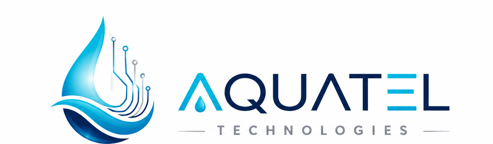

Purity, refined by science
Aquatel Technologies exists to make clean, great-tasting, reverse osmosis purified water simple to access - for every home, office and team.

Why Aquatel existsWater you can taste the difference in
Everyday water can carry dissolved solids, odours and an inconsistent taste. We built Aquatel Technologies around a multi-stage reverse osmosis process so that what reaches your glass is clean, crisp and consistent - every single time.
We are a design-forward, tech-enabled water brand. That means a careful purification process, hygienic bottling and refilling, and a delivery model that fits real life.
Our Mission
To deliver dependable, science-led purified water that people can trust for everyday drinking - bottled fresh and delivered with care.
Our Vision
To become the most trusted purified water brand in the communities we serve, with a refill-first model that is kinder to the planet.
Our values
Purity
Multi-stage reverse osmosis purification at the heart of everything.
Consistency
The same clean taste and quality, batch after batch.
Trust
Honest communication, clear placeholders, no overpromising.
Accessibility
Flexible delivery and refill options that fit everyday life.
Sustainability
A refill model designed to cut down single-use plastic.
Science-led
Purification decisions guided by process, not marketing.
From source to sip
Source intake
Incoming water enters the purification line.
Multi-stage RO
Sediment, carbon and membrane stages do the heavy lifting.
Polish & hygiene
Final polish and hygiene treatment before bottling.
Bottle & deliver
Bottled or refilled, then delivered fresh to you.
The team behind the water
Team details to be added.
Founder & Operations
Name placeholder
Quality & Purification
Name placeholder
Delivery & Support
Name placeholder
Ready for cleaner water?
Order purified water, book a refill, or ask us anything.